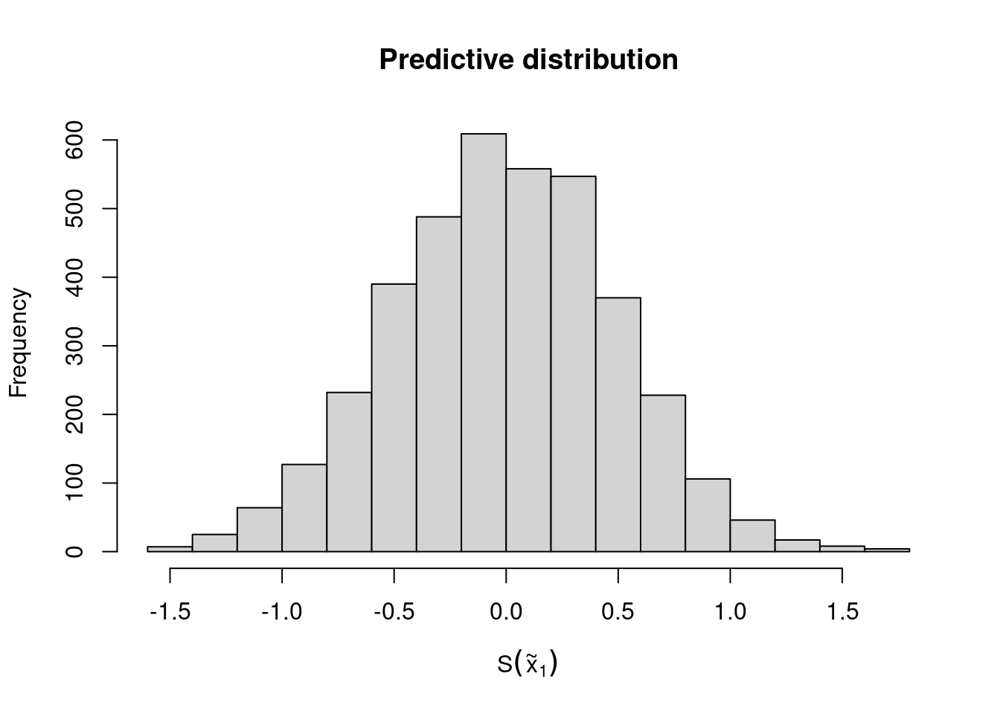
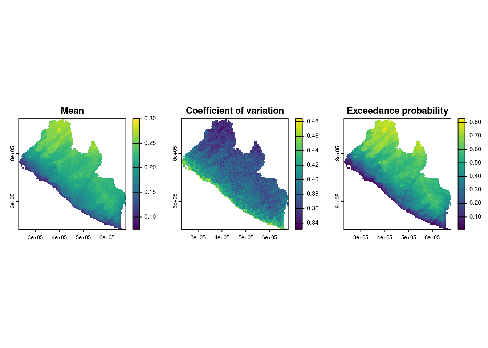
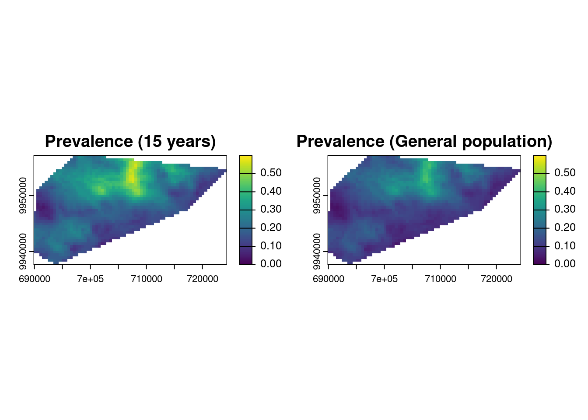

# 1) Obtaining Liberia boundaries
library(rgeoboundaries)
liberia_adm0 <- geoboundaries("liberia", adm_lvl = "adm0")
liberia_adm0 <- st_transform(liberia_adm0, crs = 32629)
# 2) Create the grid at 5 km resolution
liberia_grid <- create_grid(liberia_adm0, spat_res = 5)
# Download elevation data
library(elevatr)
liberia_elev <- get_elev_raster(locations = liberia_adm0,
z = 5, clip = "locations")
# 3) Extracting elevation at the grid locations
lb_predictors <- data.frame(elevation =
terra::extract(liberia_elev,
st_coordinates(liberia_grid)))5 Geostatistical prediction
List of the main functions used in the chapter
| Function | R Package | Used for |
|---|---|---|
pred_over_grid |
RiskMap |
Predicting the different component of the linear predictor over a grid: the covariates effects and the random effects |
pred_target_grid |
RiskMap |
Predictions of target defined at pixel-level |
pred_target_shp |
RiskMap |
Predictions of targets defined at areal level |
5.1 Introduction
Geostatistics was originally developed and applied as a predictive tool for improving mining operations and planning. In the seminal paper on model-based geostatistics (MBG) (Diggle, Tawn, and Moyeed 1998), the authors begin by stating:
*“Conventional geostatistical methodology solves the problem of predicting the realized value of a linear functional of a Gaussian spatial stochastic process* \(S(x)\) based on observations \(Y_i= S(x_i) + Z_i\) at sampling locations \(x_i\), where the \(Z_i\) are mutually independent, zero-mean Gaussian random variables.”
It is no coincidence that, although MBG represents a broad class of statistical models applicable to both estimation and prediction problems, the majority of its applications have focused on prediction. This is evident in many scientific fields where MBG has been used, including global public health, which is the primary application focus in this book. In line with the quote above, for most of the examples considered in this book, the analyses we illustrate aim to use a finite set of locations \(x_i\) — typically corresponding to households or villages — to make inferences about an observed disease risk surface. Having performed estimation of MBG models in Chapter 3, we can now carry out spatial prediction to answer critical public health questions, such as identifying hot-spots and cold-spots — areas of unusually high or low disease risk, respectively — or determining whether the average prevalence across a region exceeds a predefined policy threshold.
In this chapter, we will explore these issues, beginning with a formal statistical formulation of the spatial prediction problem and a description of the necessary steps for its implementation. We will then demonstrate how spatial prediction is performed when considering predictive targets at both the pixel-level and areal-level. Finally, we will conclude the chapter by presenting methods for comparing the predictive performance of different models, with some insights into their relative strengths and weaknesses.
5.2 Spatial prediction using geostatistical models
Let us consider the class of generalized linear geostatistical models (GLGM) as in Section 1.5. In the formulation of prediction problems, the first step consists of defining our predictive target, which we denote as \(T(x)\) where \(x\) denotes any locations within the study, which is usually not part of the sampled data. For example in the analysis of the riverblindness in Liberia, our interest lies in identifying areas where disease prevalence exceeds 20\(\%\), a threshold that use been used in the past to identify areas in need of mass drug administration due to the potential for significant disease burden and transmission (Amazigo 2008). Hence, in this case, disease prevalence corresponds to our predictive target \(T(x)\). To draw inferences on \(T(x)\) and allow us to answer the question of where \(T(x)\) exceeds a 20\(\%\) threshold, we first need to obtain the so called predictive distribution of \(T(x)\). More specifically, the predictive distribution of \(T(x)\) is the distribution of \(T(x)\) conditioned to the data, which we denote by \([T(x) \: \mid \: y]\). More importantly, by incorporating the information provided by the data, the predictive distribution of the target enables us to quantify the uncertainty stemming from the stochastic nature of the process we are modeling. In other words, the predictive distribution reflects the range of possible values that the target \(T(x)\) can take and their likelihoods based on the model we have fitted to the data. As we shall see in our examples, we can use the predictive distribution of \(T(x)\) both to provide what is our “best guess” for \(T(x)\) and a summary of uncertainty which quantifies how much concentrated is the predictive distribution around that guess. However, providing a single “best guess” for \(T(x)\) is not always the answer to our research question. In the example on riverblindness mentioned at the start of the this section, a more natural way to use the predictive distribution would be to compute the likelihood that \(T(x)\) exceeds 0.2 at any given location \(x\).
In summary, the first two steps of spatial prediction are:
Step 1. define the predictive target \(T(x)\);
Step 2. obtain the predictive distribution of \(T(x)\) and use this to compute summaries that helps to answer your original research question.
This begs two practical questions: “How do we obtain the predictive distribution of \(T(x)\)?” and “How do we use the predictive distribution to compute our summaries?”. For a mathematical derivation of the predictive distribution and the form that this takes in the special case of a linear geostatistical model, you can read Section 5.6. In what follows, we shall assume that we can simulate directly from \([T(x) \: \mid \: y]\) either using direct simulation or Markov Chains Monte Carlo (see Section 3.4.2.2).
In our exposition so far, we have also made the implicit assumption that prediction is required for our predictive target at a single, unsampled, location \(x\) and for this reason we have denote our predictive target simply as \(T(x)\). However, this is almost never the case, since in most cases, our predictive target correspond to either of the following.
Spatially continuous targets correspond to an unobserved spatially continuous surface (e.g. disease prevalence), formally denoted by \(\mathcal{T} = \{T(x), x \in A\}\), where \(A\) is our region of interest.
Areal-level targets, usually defined as transformation of the spatially continuous surface \(\mathcal{T}\), defined previously, and which we denote as \(\mathcal{T}_{A} = F(\mathcal{T}, A)\). For example, the average of \(T(x)\) over \(A\) is an areal-level target, formally defined as \(F(\mathcal{T}, A) = \int_{A} T(x) \: dx / |A|\), where \(|A|\) is the area of \(A\).
Before we consider these two types of prediction targets more in detail, we first explain the preliminary steps that need to be performed and are common to both. Whether our goal is predict a spatially continuous or areal-level target, the initial task is to draw Monte Carlo samples from the predictive distribution of the spatial process \(S(x)\)1. Next, we define a set of prediction locations, say \(q\) in total, denoted as \(\tilde{X} = {\tilde{x}_1, \ldots, \tilde{x}_q}\). These locations correspond to a regular grid that spans our region of interest, \(A\). the predictive distribution of the spatial process over the grid, represented as \([S(\tilde{X}) \: |\: y]\). This distribution allows us to generate Monte Carlo samples for \(S(\tilde{X})\), which will later be used for computing our target.
At this stage, we need to consider which of the two following types of predictions from \([S(\tilde{X}) \: |\: y]\) are required.
Marginal predictions are obtained by simulating independently from the \(q\) marginal predictive distributions of \([S(\tilde{X}) | y]\). In other words, we consider a prediction location \(\tilde{x}_j\), simulate from \([S(\tilde{x}_j) \: |\: y]\) say \(B\) samples, and repeat this for \(j=1,\ldots,q\)
Joint predictions are obtained by simulating from the joint distribution of \([S(\tilde{X}) \: |\: y]\). Unlike marginal predictions, joint predictions take into account the correlation between the different components of \([S(\tilde{X}) \: |\: y]\).
To better understand the technical differences between marginal and joint predictions, we refer you to Section 5.6.1. However, in practice, the two following facts are important.
Fact 1. Joint predictions are computationally more intensive than marginal predictions.
Fact 2. Joint predictions are required when the predictive target is at areal-level.
Fact 3. For spatially continuous targets, both marginal and joint predictions can be used but, in light of Fact 1, we might prefer using the former.
5.2.1 Generating samples from the predictive distribution of \(S(\tilde{X})\) (continue from Section 3.3.1)
We now show how the ideas and concepts discussed above are put into practice in an geostatistical analysis, using the Liberia data example. Using the fitted model in Section 3.3.1, we use the predict_over_grid function in RiskMap, to sample from the predictive distribution of the spatial Gaussian process \(S(x)\) based on a regular grid spanning the country of Liberia.
The pred_over_grid function enables us to predict the the separate effects of the covariates, given by \(d(x)^\top \beta\), and the spatial random effects, \(S(x)\), at any desired location \(x\). Hence, before we can use the pred_over_grid function, we need to do 1) obtain a shape file that defines the boundaries of our study area, 2) use that to create a regular grid and 3) extract the covariates values at those locations. The R script below performs all these steps.
In the code above, we generated a prediction grid — which, we recall, that we denote as \(\tilde{X}\) — with a spatial resolution of 5 km. Generally, a higher spatial resolution (note that a “higher spatial resolution” corresponds to a lower value for spat_res) yields more detailed prediction maps but also increases the computational cost. In this case, the choice of a 5 km grid strikes a balance between sufficient visualization clarity and manageable computation time.
At this point, we have all the necessary inputs to execute the pred_over_grid function for both marginal and joint predictions, as demonstrated below.
# Predicting the spatial process S(x) over the grid, as well as
# covariates effects
# Marginal predictions
lb_pred_S_m <- pred_over_grid(fit_liberia,
grid_pred = liberia_grid,
predictors = lb_predictors, messages = FALSE,
type = "marginal")
# Joint predictions
lb_pred_S_j <- pred_over_grid(fit_liberia,
grid_pred = liberia_grid,
predictors = lb_predictors, messages = FALSE,
type = "joint")Both lb_pred_S_m and lb_pred_S_j contain lists with the same arguments, with one key difference: the samples in the list element named S_samples for the former are drawn from the marginal predictive distributions of the components of \(S(\tilde{X})\), while for the latter, they come from the joint predictive distribution of \(S(\tilde{X})\).
An important note is that in the code above we have used the default settings for the Markov Chain Monte Carlo (MCMC). To change these setting use the function set_control_sim whose output should be passed to the argument contol_sim of pred_over_grid. The diagnostic on the convergence of the MCMC can also be applying the check_mcmc function to either lb_pred_S_m or lb_pred_S_j; see Section 3.4.2.3 for more details.
We can inspect the predictive distribution of any component \(S(\tilde{X})\) through the Monte Carlo samples stored in S_samples. For example, the script below generates the histogram for the predictive distribution of the first component of \(S(\tilde{X})\) (Figure 5.1).
hist(lb_pred_S_m$S_samples[,1], main = "Predictive distribution",
xlab = expression(S(tilde(x)[1])))
5.3 Spatially continuous targets
In the previous section, we explained and demonstrated how to obtain Monte Carlo samples from the predictive distribution of \(S(\tilde{X})\), which we denoted by \([S(\tilde{X}) \: |\: y]\). Let \(S_{(j)}(\tilde{X})\) and \([S(\tilde{X}) \: |\: y]\) represent the \(j\)-th Monte Carlo samples for the entire grid and the specific location \(x_k\), respectively, for \(j=1,\ldots,B\) and \(k=1,\ldots,q\).
We define our predictive target, \(T(x)\), at any given location \(x\), as a transformation of \(S(x)\). Thus, we express it as \(T(x) = f\{S(x)\}\). Note that \(f(\cdot)\) can represent any type of non-linear transformation of \(S(x)\) and may include covariate effects and other non-structured random effects. A list of common predictive targets frequently used in geostatistical analysis is provided in Table 5.1.
| Predictive target \(T(x)\) | Name of the predictive target | Generalized linear model (GLM) family |
|---|---|---|
| \(d(x)^\top \beta + S(x)\) | Linear predictor | Any GLM |
| \(\frac{\exp\{d(x)^\top \beta + S(x)\}}{1+\exp\{d(x)^\top \beta + S(x)\}}\) | Prevalence | Binomial |
| \(\exp\{d(x)^\top \beta + S(x)\}\) | Mean number of cases | Poisson |
| \(S(x)\) | Spatial random effects | Any GLM |
| \(d(x)^\top \beta\) | Covariates effects | Any GLM |
An important feature of the predictive targets listed in Table 5.1 is that none of them include the nugget effect, denoted by \(Z_i\) in our linear predictor definition for generalized linear geostatistical models. The reason for excluding \(Z_i\) from the predictive targets is that, in most cases, it lacks a clear, unambiguous scientific interpretation. However, \(Z_i\) might be included, for example, in environmental studies focusing on highly localized phenomena where measurement error or small-scale variability is of direct scientific interest; or in epidemiological studies where inferences at the individual level, rather than the population level, are required, and where \(Z_i\) is introduced to account for unexplained individual-level variation. It is also worth noticing, the primary impact of including \(Z_i\) in \(T(x)\) would be an increase in the uncertainty of predictive inferences for \(T(x)\), with minimal effect (or none at all, if \(T(x)\) corresponds to the linear predictor) on the point predictions.
The predictive targets in Table 5.1 corresponding to \(d(x)^\top \beta\) or the spatial random effects \(S(x)\) might be considered when the goal is to highlight the different contribution to the overall predictive inferences from the measured covariates.
5.3.0.1 Example: mapping riverblidness prevalence in Liberia (continuing from Section 5.2.1)
Let us continue the geostatistical of the riverblindness data in Liberia. The predictive target we consider is prevalence, hence \[T(x) = \frac{\exp\{ \beta_{0} + \beta_{1}\log\{e(x)\} + S(x)\}}{1+\exp\{\beta_{0} + \beta_{1}\log\{e(x)\} + S(x)\}}\], where \(e(x)\) is the elevation in meters at location \(x\).
Through the pred_target_grid we can use the output in lb_pred_S_m (or lb_pred_S_j as well, in this case) to generate predictions of prevalence over the regular grid at 5 km we have created earlier.
# Prediction of riverblindness prevalence
lb_prev <-
pred_target_grid(
lb_pred_S_m,
f_target = list(prev = function(lp) exp(lp)/(1+exp(lp))),
pd_summary = list(mean = function(Tx) mean(Tx),
cv = function(Tx) sd(Tx)/ mean(Tx),
exceed20 = function(Tx) mean(Tx > 0.2))
)In the function above the argument f_target can take a list of functions, as multiple predictive targets can be defined. Here, we only specified prevalence (prev). Note that in defining the predictive target in f_target, we need to express that as a function of \(d(x)^\top \beta + S(x)\). The argument include_covariates also allows us to define predictive target that do not use covariates from the model. By default include_covariates = TRUE, hence in the code above covariates are part of what is defined as lp. To predict the spatial random effects \(S(x)\) only, for example, you can set include_covariates = FALSE and f_target = list(Sx = function(lp) lp). In pd_summary, we define the summaries that we want to visualize from the predictive distribution. Here, we have specified the mean, coefficient of variation and the probability of exceeding a 20\(\%\) prevalence threshold.
We can then visualize the resulting maps as follows.
# Displying the results
par(mfrow = c(1,3))
plot(lb_prev, which_target = "prev",
which_summary = "mean", main = "Mean")
plot(lb_prev, which_target = "prev",
which_summary = "cv", main = "Coefficient of variation")
plot(lb_prev, which_target = "prev",
which_summary = "exceed20", main = "Exceedance probability")
par(mfrow=c(1,1))
The maps in Figure 5.2 indicate a higher prevalence as we move away from the coast and at higher altitudes. A very similar spatial pattern is observed in the likelihood of exceeding 20\(\%\) prevalence. Also, based on the map of the coefficient of variation, the uncertainty around the point predictions of prevalence is higher along the coast and lower in the inland areas of Liberia.
5.3.1 Example: mapping malaria using age and elevation as predictors
We now consider an example on malaria mapping, where we use two different types of covariates: a spatially referenced covariate corresponding to elevation; the individual age. We use the malkenya_comm subset of the malkenya data-set (see Section 3.1.1.2) and, to alleviate the computational burden, we further reduce this data-set by taking the first 1000 rows. Hence, we create our new data-set, malkenya_comm1000, using the followind code.
malkenya_comm1000 <- malkenya_comm[1:1000,]
malkenya_comm1000 <- st_as_sf(malkenya_comm1000, coords = c("Long", "Lat"),
crs = 4326)
malkenya_comm1000 <- st_transform(malkenya_comm1000, crs = 32736)Based on the exploratory analysis shown in Section 3.1.1.2, we consider a geostatistical model fitted to the individual binary outcomes, \(Y_{ij}\), which correspond the rapid diagnostic test (RDT) results for the \(j\)-th individual in the \(i\)-th community, and take value \(Y_{ij}=1\) if the RDT is positive and \(Y_{ij}=0\) if the RDT is negative. Using a Binomial geostatistical model, we model the individual probability, \(p_{ij}\) of a positive RDT using the following linear predictor. \[ \log\left\{\frac{p_{ij}}{1-p_{ij}}\right\} = \beta_{0} + \beta_{1}a_{ij}+\beta_{2} \times\max\{a_{ij}-15, 0\} + \beta_{3}\max\{a_{ij}-40, 0\} + \beta_{4} e(x_i) + S(x_i), \tag{5.1}\] where \(e(x_{i})\) and \(a_{ij}\) are the elevation in meter and the age in years for the \(j\)-th individual residing at the \(i\)-th household, respectively.
When using the model in Equation 5.1 to predict RDT prevalence, a key question arises: how should we handle the age variable, which, unlike elevation, is not available as a geo-referenced covariate at all locations in the study area? The answer depends on the research question being addressed.
For instance, if the goal is to infer disease risk across different age groups, we can generate different maps for each group of interest. This can be easily achieved by fixing the value of \(a_{ij}\) to a specific age for all prediction locations. Alternatively, if the objective is to generate a predictive map for the general population, rather than for a specific age group, we must employ a probabilistic model for age and integrate out its effect.
Developing a credible probabilistic model for age is beyond the scope of this section. Instead, we demonstrate a simple yet reasonable solution which uses the empirical age distribution from the data. By random sampling from this distribution, we can then assign age values to prediction locations. The steps are as follows.
- Obtain the empirical distribution of age from the data.
- Sample with replacement from such distribution (the
samplefunction in R can be used for this purpose) as many times as the number of prediction locations, so that each grid location \(\tilde{x}\) has a value of age assigned. - Generate a sample from the predictive distribution of the target \(T(\tilde{x})\) at each of the grid locations \(\tilde{x}\).
- Repeat 1 to 3, for as many times as the samples generates from \(S(\tilde{X})\).
This approach relies on two key assumptions. First, that the age distribution is spatially neutral, i.e., it does not vary across space. Second, that the data are representative of the age distribution in the target population. In the data used for this example, we believe these assumptions are reasonable, given the relatively small study area, where age is unlikely to exhibit significant spatial variation, and the fact that the data are a random sample from the community.
In the scripts presented in the remainder of this section, we show how to generate a predictive map of prevalence for children age 15 years, and another map that instead uses the approach earlier described to remove the effect of age and generate a map of prevalence for the general population.
First, we fit the model. Note that the effect of age is not linear and we use linear splines to account for this, using the results of the exploratory analysis shown in @Section 3.1.1.2.
fit_malkenya <- glgpm(RDT ~ Age + pmax(Age-15, 0) +
pmax(Age-40, 0) + elevation +
gp(),
data = malkenya_comm1000,
family = "binomial")After fitting the model, we create a prediction grid at a spatial resolution of 500 meters and extract the values of elevation. In this analysis, due to the small size of the study area, we do not use administrative boundaries as they are too large. Instead, we use the convex hull2 of the sample locations to define the boundaries of our study area.
# Create grid from convex hull
shp_ch <- convex_hull_sf(malkenya_comm1000)
ken_grid <- create_grid(shp_ch, spat_res = 0.5)
# Get elevation raster
ken_elev <-
get_elev_raster(locations = shp_ch,
z = 9, clip = "locations")We then create the data frame of predictors where age is set to 15.
# Create the data fr
ken_predictors <- data.frame(elevation =
extract(ken_elev, st_coordinates(ken_grid)),
Age = 15)We now have all the ingredients to carry out prediction.
pred_ken_S <- pred_over_grid(fit_malkenya, grid_pred = ken_grid,
predictors = ken_predictors)
pred_age15 <-
pred_target_grid(pred_ken_S,
f_target = list(prev = function(lp) exp(lp)/(1+exp(lp))),
pd_summary = list(mean = function(Tx) mean(Tx)))The code below shows how to perform the 4 steps described above to generate a predictive map for the general population. Below we use the function update_predictors to update the covariates effects that are stored in mu_pred, a list element generated as the output of pred_over_grid.
# Number of Monte Carlo samples
n_sim <- ncol(pred_age15$lp_samples)
# Number of prediction locations
n_pred <- nrow(predictors)
# The create object `pred_ken_S_i` with the goal of changing the
# coviariates effects stored in `mu_pred` according the sample values of age
pred_ken_S_i <- pred_ken_S
pred_ken_S_i$mu_pred <- matrix(NA, nrow = n_pred, ncol = n_sim)
for(i in 1:n_sim) {
# Generate n_pred samples from the empirical distribution of age
ken_predictors$Age <- sample(malkenya_comm1000$Age, n_pred, replace = TRUE)
# Generate the new covariates effects with `update_predictors` and store them in
# `mu_pred`
pred_ken_S_i$mu_pred[,i] <- update_predictors(pred_ken_S, ken_predictors)$mu_pred
}
# Prediction of prevalence
pred_aver_pop <- pred_target_grid(pred_ken_S_i,
f_target = list(prev = function(lp) exp(lp)/(1+exp(lp))))We can now plot the two maps and compare them.
par(mfrow = c(1,2))
plot(pred_age15, which_target = "prev", which_summary = "mean", main = "Prevalence (15 years)", range = c(0,0.6))
plot(pred_aver_pop, which_target = "prev", which_summary = "mean", main = "Prevalence (General population)", range = c(0,0.6))
par(mfrow = c(1,1))
The exploratory analysis of Section 3.1.1.2 had shown that the prevalence around the age of 15 is higher than at other ages. This is also reflected in Figure 5.3, when the left panel, corresponding to the RDT prevalence for children at the age of 15 years, shows a higher level of prevalence than the right panel, which is instead for the general population.
5.4 Areal-level targets
When determining areal-level targets, we must first address the following questions:
- What spatially continuous target, \(T(x)\), are we seeking to aggregate?
- What are the spatial units, denoted as \(A_i\) for \(i = 1, \dots, N\), over which the aggregation is required?
- What aggregating function should be applied?
- Should spatial weights be incorporated in the aggregation, and if so, what weights are appropriate?
The first question was discussed in earlier sections, where examples of predictive targets that define \(T(x)\) can be found in Table 5.1. The answers to the remaining questions are context-dependent and closely linked to the primary research objectives. In public health settings, the areas \(A_i\) often correspond to administrative units or regions where decisions are made and resources are allocated.
A common aggregating function for \(T(x)\) is the mean, which is formally defined as:
\[ \mathcal{M}_i = \frac{1}{|A_i|}\int_{A_i} T(x) \: dx. \tag{5.2}\]
In addition to the mean, several other aggregating functions can be applied depending on the context of the analysis.
For instance, in the study of Anopheles mosquitoes in Cameroon, we may be interested in estimating the total number of mosquitoes trapped within the study area (\(A_i\) represents a single region in this case). If \(T(x)\) denotes the number of mosquitoes trapped at location \(x\), the areal-level target can be expressed as: \[ \mathcal{S}_i = \int_{A_i} T(x) \: dx. \]
Additionally, to capture the heterogeneity of \(T(x)\) within an area, variance-based measures can be used. The variance of \(T(x)\) in \(A_i\) is given by: \[ \mathcal{V}_i = \frac{1}{|A_i|}\int_{A_i} \left(T(x) - \mathcal{M}_i\right)^2 \: dx, \] where \(\mathcal{M}_i\) is the mean of \(T(x)\) in \(A_i\).
The formulation of the areal-level targets given so far assumes equal weighting for all locations within the area. Alternatively, if the we consider for example the areal level target in Equation 5.2, one could use spatial weights, \(w(x) > 0\), and redefine \(\mathcal{M}_i\) as:
\[ \mathcal{M}_i = \frac{\int_{A_i} w(x) T(x) \: dx}{\int_{A_i} w(x) \: dx}. \]
Selecting appropriate spatial weights is crucial, as it reflects the significance of different locations within the area. We can define three types of weighting: population-density, risk-based, and distance-based. We point out that this distinction is not always clear cut (population could indeed be a risk factor in our analysis) but this classification is made only for the sake of making the explanation clearer.
For example, if the goal is to prioritize areas with higher populations, weights \(w(x)\) could be proportional to population density at location \(x\). This approach gives greater importance to locations where more people reside, which can be particularly relevant when aggregating disease prevalence data for resource allocation.
In cases where certain sub-regions within \(A_i\) are at higher risk for disease (e.g., proximity to environmental hazards or areas with lower access to healthcare), risk-based weights could be applied. Here, \(w(x)\) would be higher in regions identified as higher risk, providing a more targeted aggregation of disease prevalence. For example, populations in rural areas may face higher exposure to infectious diseases than those in urban areas, making it important to assign greater weight to these higher-risk regions in the aggregation process.
If the objective is to account for proximity effects (such as the spread of an infectious disease or contamination from a known source), distance-based weights could be used. Locations closer to a known disease outbreak area or source of exposure could be given more weight to reflect the spatial dynamics of disease transmission.
Using spatial weights in these ways ensures that the aggregation of disease prevalence \(T(x)\) reflects not only the distribution of the disease but also the underlying population, risk, or spatial characteristics relevant to the public health problem under investigation.
5.5 Comparing the predictive performance of geostatistical models
5.6 Theory
5.6.1 Derivation of the predictive distribution
5.6.2 Scoring rules
5.7 Common questions from users
What should be the spatial resolution of the grid used for prediction?
I have covariates with different spatial resolutions. Which spatial resolution should I use?
My prediction map looks like noise. What could be the error?
The main goal of my analysis is to carry out predictions of the main outcome. However, can I also use the model to draw inferences on the association between the outcome and the covariates that I have included in the model?
In my model I have some covariates that are attached to the individual (e.g. age, gender, occupation, etc.). How do I specify them when doing prediction?
Read Section 5.3.1.
5.8 Exercises
- Review questions.
- What are the steps that needs to taken when performing spatial prediction?
- Define the predictive distribution of a predictive target and explain how this is used to answer a research question.
- Distinguish between spatially continuous and areal-level targets, giving at least two examples for each.
- Explain the difference between marginal and joint predictions, and for which targets each can be used.
Here, we are overlooking the fact that when \(T(x)\) is a linear transformation of \(S(x)\) and the the model fitted to the data is a linear geostatistical model, then we can derive any summary of the predictive distribution analytically, without the need of carrying out any simulation. Although this may displease some of our fellow statisticians who care about computational efficiency, for pedagogical reasons, here we have chosen to explain only the Monte Carlo based approach, which works in all scenarios.↩︎
The convex hull of a set of spatial locations is the smallest possible shape (usually a polygon) that completely encloses all the points, such that if you take any two points inside the shape, the straight line connecting them is also entirely inside the shape. In simple terms, it can be thought of as stretching a rubber band around the outermost points in a set, and the shape the rubber band forms is the convex hull.↩︎